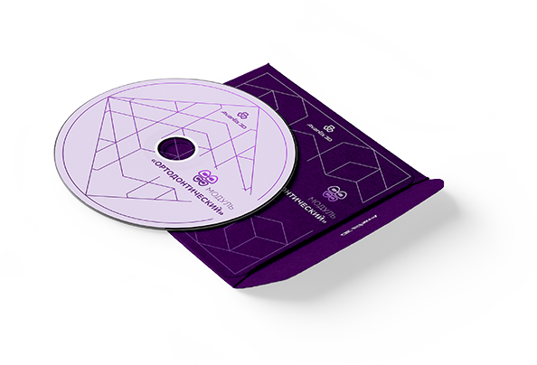

Зарегистрировавшись в Личном кабинете, Вы в автоматическом режиме можете рассчитать стоимость заказа, получать счета на оплату, самостоятельно загружать исходные данные в электронном виде и скачивать результаты, получать уведомления и контролировать сроки выполнения работ.
Программные продукты
Программа Avantis 3D предлагает гибкие решения для подготовки данных и диагностики, эстетического планирования лечения, исправления положения зубов, навигационной имплантологии, проектирования протезов, а так же для планирования и реализации с помощью 3D технологии комплексного стоматологического лечения «под ключ».

Модуль
«Подготовка данных и диагностика»
Совмещение данных сканирования лица, зубных рядов и данных Компьютерной Томографии в единой сцене.
Модуль
«Ортодонтический»
Планирование выравнивания зубов с визуализацией движения зубов и их корней.

Модуль
«Навигационная имплантология»
Подготовка данных для изготовления направляющих шаблонов с любыми вариантами фиксации. Планирование положения имплантатов.

Модуль
«Дизайн улыбки»
Планирование выравнивания зубов с визуализацией движения зубов и их корней.
Модуль «Подготовка данных и диагностика»
Совмещение данных сканирования лица, зубных рядов и данных Компьютерной Томографии в единой сцене
Лицензия на 1 год
15 000
руб.
Возможности модуля
- Импорт данных от различных видов сканеров и компьютерной томографии
- Совмещение данных сканирования лица, зубных рядов и Компьютерной Томографии в единой сцене
- Ориентация сцены в виртуальном пространстве с автоматическим определением плоскости симметрии, обозначение вспомогательных плоскостей и линий
- Получение ориентации сцены в виртуальном пространстве с автоматическим определением плоскости симметрии и очертание вспомогательных линий и плоскостей (франкфуртской, камперовской, произвольной, горизонталей)
- Получение количественного анализа моделей (линейные и угловые измерения), поднутрения, различия между двумя моделями, соотношения с антагонистами, расчета площади поверхности и объема модели.
- Возможность мануального разделения скана зубных рядов на отдельные зубы и десну
- Моделирование цоколя модели зубного ряда
- Диагностика по данным Компьютерной Томографии (выявление дефектов пломбирования каналов зубов, кистогранулем, ретинированных зубов, трещин корней, анализ положения головки ВНЧС и т.д.)
- Подготовка объектов для 3D прототипирования и фрезерования
{kind=link}
Модуль
«Ортодонтический»
Планирование выравнивания зубов с визуализацией движения зубов и их корней
Лицензия на 1 год
15 000
руб.

Возможности модуля
- Создание виртуального сетапа зубов
- Планирование комплексного движения зубов с учетом их последовательности, поворотов и линейных перемещений
- Сохранение в памяти нескольких вариантов перемещения зубов для одного и того же клинического случая
- Перемещение коронковой части зубов и их корней
- Контроль положения корней в пространстве челюстной кости
- Планирование движения с учетом индивидуального положения оси вращения зуба (длины корня, степени атрофии челюстной кости)
- Установка произвольной величины шага перемещения зубов для последующего изготовления прозрачных капп
- Автоматический расчет количества необходимых капп (отдельно для верхней и нижней челюстей) и времени лечения
- Проведение автоматической гиперкоррекции в случае изготовления дополнительных прозрачных капп
- Визуализация и измерение величины необходимой апроксимальной редукции или окклюзионной коррекции
- Возможность запрета на взаимное «пересечение» объектов при их движении
- Самостоятельное моделирование аттачментов, либо применение их стандартных типоформ
- Варьирование движения зубов в многооконном режиме (с разных ракурсов), на фоне фотографий лица пациента, с учетом изменений положения нижней челюсти при улыбке на фотографиях пациента
Модуль «Навигационная имплантология»
Подготовка данных для изготовления направляющих шаблонов с любыми вариантами фиксации. Планирование положение имплантатов.
Лицензия на 1 год
15 000
руб.
Возможности модуля
- Виртуальное планирование положения имплантатов и анализ возможности имплантации
- Подготовка данных для изготовления направляющих шаблонов с любыми вариантами фиксации (назубной, накостной, надесневой)
- Выделение объектов (кожа, кость, зубы) по их оптической плотности
- Сопоставление в пространстве данных томографии и сканирования зубных рядов
- Виртуальная расстановка искусственных зубов в области дефектов зубных рядов
- Создание трассировки нижнечелюстного канала
- Установка виртуальных аналогов имплантатов (для любых систем) в плоскости сечений
-
Проектирование и изготовление направляющих шаблонов для любых вариантов протокола подготовки ложа для имплантатов:
- только для пилотного сверла
- полный протокол сверления с использованием специализированных хирургических фрез с внутренним охлаждением
-полный протокол сверления под любую систему имплантации с использованием обычных фрез с наружным охлаждением по Уникальной Запатентованной Технологии. - Обеспечение непревзойденной точности посадки направляющих шаблонов
- Планировани доступа для позиционирования наконечника и сверления с учетом возможных помех (соседние зубы, антагонисты) в полости рта
- Диагностика по данным Компьютерной Томографии (выявление дефектов пломбирования каналов зубов, кистогранулем, ретинированных зубов, трещин корней, анализ положения головки ВНЧС и т.д.)
Модуль «Дизайн улыбки»
Интеграция фотографии с визуализацией проектируемых зубных рядов. Проектирование будущей формы зубов (эстетическое моделирование).
Лицензия на 1 год
40 000
руб.
Возможности модуля
- Загрузка в 3D сцену 2D объектов в виде рисунков, фотографий, рентгеновских снимков (телерентгенограмм)
- Удаление фрагментов загруженных фотографий для оценки планируемых изменений формы зубов и/или их цвета
- Планирование доступа для позиционирования наконечника и сверления с учетом возможных помех (соседние зубы, антагонисты) в полости рта
- Придание естественных цветов виртуальным зубам и деснам
- Проектирование будущей формы зубов (эстетическое моделирование), как основа для временных коронок и последующего изготовления постоянных (алгоритмы деформации и сглаживания, банк данных зубов)
Купить программу

Заказать звонок
Если у Вас возникли вопросы по программному обеспечению Avantis 3D или услугам проектирования и 3D печати, оставьте номер телефона. Наш специалист свяжется с Вами и ответит на любые вопросы.